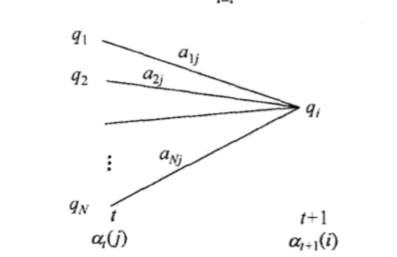
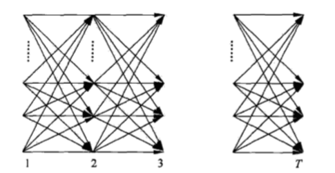
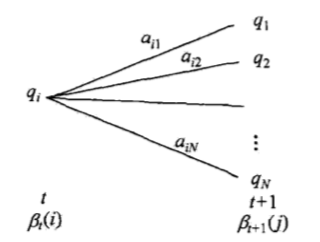

隐马尔科夫模型(HMM)是可用于标注问题的统计学习模型，描述由隐藏的马尔科夫链随机生成观测序列的过程，属于生成模型。
本章首先介绍隐马尔可夫模型的基本概念，然后分别叙述隐马尔可夫模型的概率计算算法、学习算法及其预测算法。
隐马尔可夫模型在语音识别、自然语言处理、生物信息、模式识别等领域有着广泛的应用。
13.1 隐马尔科夫模型的基本概念
13.1.1隐马尔科夫模型的定义
定义13.1(隐马尔科夫模型) 隐马尔可夫模型是关于时序的概率模型，描述由一个隐藏的马尔科夫链随机(首先)生成不可观测的状态随机序列，再由各个状态生成一个观测而(然后)产生观测随机序列的过程。
隐藏的马尔科夫链随机生成的状态的序列，称为状态序列；每个状态生成一个观测，而由此产生的观测的随机序列，称为观测序列。序列的每一个位置又可以看作是一个时刻。
隐马尔可夫模型由初始概率分布、状态转移概率分布以及观测概率分布确定。隐马尔可夫模型的形式定义如下:
设Q是所有可能的状态的集合，V是所有可能的观测的集合。
其中，N是可能的状态数，M是可能的观测数。
I是长度为T的状态序列，O是对应的观测序列。
A是状态转移概率矩阵:
其中，
是在时刻t处于状态的条件下在时刻t+1转移到状态的概率。
B是观测概率矩阵:
其中，
是在时刻t处于状态的条件下生成观测的概率。
关于是初始状态概率向量:
其中，
是时刻t=1处于状态的概率。
隐马尔科夫模型是由初始状态概率向量、状态转移概率矩阵A和观测概率矩阵B决定。和A决定状态序列，B决定观测序列。因此，隐马尔科夫模型可以用三元符号表示，即
A,B,称为隐马尔可夫模型的三要素。
状态转移概率矩阵矩阵A与初始状态概率向量确定了隐藏的马尔科夫链，生成不可观测的状态序列。
观测概率矩阵B确定了如何从状态生成观测，与状态序列综合确定了如何产生观测序列。
从定义可知，隐马尔科夫模型作了两个基本假设：
(1)齐次马尔科夫性假设，即假设隐藏的马尔科夫链在任意时刻t的状态只依赖于其前一时刻的状态，与其他时刻的状态及观测无关，也与时刻t无关。
(2)观测独立性假设，即假设任意时刻的观测只依赖于该时刻的马尔科夫链的状态，与其他观测及状态无关。
隐马尔可夫模型可以用于标注，这时状态对应着标记。标记问题是给定观测的序列，预测其对应的标记序列。
13.1.2 观测序列的生成过程
根据隐马尔可夫模型定义，可以将一个长度为T的观测序列的生成过程描述如下:
算法10.1(观测序列的生成)
输入:隐马尔可夫模型，观测序列长度T；
输出:观测序列。
(1)按照初始状态分布产生状态
(2)令t=1
(3)按照状态的观测概率分布生成
(4)按照状态的状态转移概率分布产生状态，
(5)令t=t+1;如果t<T，转步(3)；否则，终止
13.1.3 隐马尔科夫模型的3个基本问题
隐马尔可夫模型有3个基本问题:
(1)概率计算问题。给定模型和观测序列，计算在模型下观测序列O出现的概率。
(2)学习问题。已知观测序列，估计模型参数，使得在该模型下观测序列概率最大。即用极大似然估计的方法估计参数。
(3)预测问题。也称为解码问题。已知模型和观测序列，求对给定观测序列条件概率最大的状态序列。即给定观测序列，求最有可能的对应的状态序列。
13.2 概率计算算法
本节介绍计算观测序列概率的前向(forward)和后向(backward)算法。先介绍概念上可行但计算上不可行的直接计算法。
13.2.1 直接计算法
给定模型和观测序列，计算观测序列O出现的概率。最直接的方法是按概率公式直接计算。通过列举所有可能的长度为T的状态序列，求各个状态序列I与观测序列的联合概率，然后对所有可能的状态序列求和，得到。
状态序列的概率是
对固定的状态序列，观测序列的概率是，
O和I同时出现的联合概率为:
然后，对所有可能的状态序列I求和，得到观测序列O的概率，即
但是，利用公式(13.13)计算量很大，是阶的，这种算法不可行。
13.2.2 前向算法
定义13.2(前向概率) 给定隐马尔可夫模型，定义到时刻t部分观测序列为且状态为的概率为前向概率，记作
可以递推的求得前向概率及观测序列概率。
算法13.2(观测序列概率的前向算法)
输入：隐马尔可夫模型，观测序列O;
输出：观测序列概率
(1)初值
(2)递推 对t=1,2,…,T-1，
(3)终止
前向算法解释如下:
步骤(1)初始化前向概率，是初始时刻的状态和观测的联合概率。
步骤(2)是前向概率的递推公式，计算到时刻t+1部分观测序列为且在时刻t+1处于状态的前向概率。
如下图所示。在式(13.16)的方括弧里，既然是到时刻t观测到并在时刻t处于状态的前向概率，那么乘积就是时刻t观测到并在时刻t处于状态而在时刻t-1到达状态的联合概率。
对这个乘积在时刻t的所有可能的N个状态求和，其结果就是到时刻t观测为并在时刻t+1处于状态的联合概率。
方括号里的值与观测概率的乘积恰好是到时刻t+1观测到并在时刻t+1处于状态的前向概率。

步骤(3)给出的计算公式。因为
所以
如下图所示，前向算法实际上是基于”状态序列的路径结构”递推计算的算法。前向算法高效的关键是其局部计算前向概率，然后利用路径结构将前向概率”递推”到全局，得到。
具体地，在时刻t=1，计算的N个值(i=1,2,…,N)；在各个时刻t=1,2,…,T-1，计算的N个值(i=1,2,…,N)，而且每个的计算利用前一时刻N个。减少计算量的原因在于每一次计算直接引用前一个时刻的计算结果，避免重复计算。这样，利用前向概率计算的计算量是阶的，而不是直接计算的阶。

13.2.3 后向算法
定义13.3(后向概率) 给定隐马尔可夫模型，定义在时刻t状态为的条件下，从t+1到T的部分观测序列为的概率为后向概率，记作
可以用递推的方法求得后向概率及观测序列概率。
算法13.3(观测序列概率的后向算法)
输入:隐马尔可夫模型，观测序列O
输出:观测序列概率
(1)
(2)对t=T-1,T-2,…,1
(3)
算法解释如下：
步骤(1)初始化后向概率，对最终时刻的所有状态规定。
步骤(2)是后向概率的递推公式。
如下图所示，

为了计算在时刻t状态为条件下时刻t+1之后的观测序列为的后向概率，只需考虑在时刻t+1所有可能的N个状态的转移概率(即项)，以及在此状态下的观测的观测概率(即项)，然后考虑状态之后的观测序列的后向概率(即项)。
步骤(3)求的思路与步骤(2)一致，只是初始概率代替转移概率。
利用前向概率和后向概率的定义可以将观测序列概率统一写成
此式当t=1和t=T-1时分别为式(13.21)和式(13.17)。
13.2.4 一些概率与期望值的计算
利用前向概率和后向概率，可以得到关于单个状态和两个状态概率的计算公式。
给定模型和观测O，在时刻t处于状态的概率。记
可以通过前向后向概率计算。事实上，
由前向概率和后向概率定义可知:
于是得到:
给定模型和观测O，在时刻t处于状态且在时刻t+1处于状态的概率。记
可以通过前向后向概率计算:
而
所以
将和对各个时刻t求和，可以得到一些有用的期望值:
在观测O下状态i出现的期望值:
在观测O下由状态i转移的期望值
在观测O下由状态i转移到状态j的期望值
13.3 学习算法
隐马尔可夫模型的学习，根据训练数据是包括观测序列和对应的状态序列还是只有观测序列，可以分别由监督学习与非监督学习实现。
本节首先介绍监督学习算法，而后介绍非监督学习算法——Baum-Welch算法(也就是EM算法)。
13.3.1 监督学习算法
假设已给训练数据包含S个长度相同的观测序列和对应的状态序列，那么可以利用极大似然估计法来估计隐马尔可夫模型的参数。具体方法如下:
1.转移概率的估计
设样本中时刻t处于状态i时刻t+1转移到状态j的频数为，那么状态转移概率的估计是：
2.观测概率的估计
设样本中状态为j并观测为k的频数是，那么状态为j观测为k的概率的估计是
3.初始状态概率的估计为S个样本中初始状态为的频率
由于监督学习需要使用训练数据，而人工标注训练数据往往代价很高，有时就会利用非监督学习的方法。
13.3.2 Baum-Welch算法
假设给定训练数据只包含S个长度为T的观测序列而没有对应的状态序列，目标是学习隐马尔可夫模型的参数。
我们将观测序列数据看作观测数据O，状态序列数据看作不可观测的隐数据I，那么隐马尔可夫模型事实上是一个含有隐变量的概率模型。
它的参数学习可以由EM算法实现。
1.确定完全数据的对数似然函数
所有观测数据写成，所有隐数据写成，完全数据是。完全数据的对数似然函数是。
2.EM算法的E步：求Q函数
注意：根据Q函数的定义，式(13.33)把替换为，对而言，是常数项，因此省略掉，从而得到式(13.33)。
其中，是隐马尔可夫模型参数的当前估计值，是要极大化的隐马尔可夫模型参数。
于是函数可以写成:
式中，求和都是对所有训练数据的序列总长度T进行的。
3.EM算法的M步:极大化Q函数求模型参数A,B,
由于要极大化的参数在式（13.34）中单独地出现在3个项中，所以只需对各项分别极大化。
(1)式(13.34)的第一项可以写成:
注意到满足约束条件，利用拉格朗日乘子法，写出拉格朗日函数:
对其求偏导数并令结果为0
得
对i求和得到
代入式(13.35)即得
(2)式（13.34）的第2项可以写成
类似第1项，应用具有约束条件的拉格朗日乘子法可以求出
(3)式(13.34)的第3项为
同样用拉格朗日乘子法，约束条件是(参考公式(13.31))。注意，只有在时对的偏导数才不为0，以表示。求得
13.3.3 Baum-Welch模型参数估计公式
将式(13.36)~式(13.38)中的各概率分别用，表示，则可将相应的公式写成 :
其中，，分别由式（13.24）及式(13.26)给出。式(13.39)~(13.41)就是Baum-Welch算法，它是EM算法在隐马尔科夫模型学习中的具体体现。
算法13.4(Baum-Welch算法)
输入：观测数据；
输出：隐马尔科夫模型参数
(1)初始化
对n=0，选取，，，得到模型。
(2)递推。对n=1,2,…,
右端各值按规则和模型计算。式中，由式(13.24)和式(13.26)给出。
(3)终止。得到模型参数。
13.4 预测算法
下面介绍隐马尔科夫模型预测的两种算法:近似算法与维特比算法。
13.4.1 近似算法
近似算法的想法是，在每个时刻t选择在该时刻最有可能出现的状态，从而得到一个状态序列，将它作为预测的结果。
给定隐马尔科夫模型和观测序列O，在时刻t处于状态的概率是
在每一时刻t最有可能的状态是
从而得到状态序列。
近似算法的优点：计算简单
近似算法的缺点：不能保证预测的状态序列整体是最有可能的状态序列，因为预测的状态序列可能有实际不发生的部分。(事实上，上述方法得到的状态序列中有可能存在转移概率为0的相邻状态，即对某些i,j，)
13.4.2 维特比算法
维特比算法的思路是，使用动态规划解隐马尔科夫模型预测问题，即用动态规划求概率最大路径(最优路径)。(这一条路径对应着一个状态序列)。
根据动态规划原理，最优路径具有这样的特性：如果最优路径在时刻t通过结点，那么这一路径从结点到终点的部分路径，对于从到的所有可能的部分路径来说，必须是最优的。
以下描述维特比算法的流程：
依据这一原理，我们只需从时刻t=1开始，递推地计算在时刻t状态为i的各条部分路径的最大概率，直至得到时刻t=T状态为i的各条路径的最大概率。
时刻t=T的最大概率即为最优路径的概率，最优路径的终结点也同时得到。
之后，为了找出最优路径的各个结点，从终结点开始，由后向前逐步求得结点，得到最优路径。这就是维特比算法。
首先导入两个变量和。定义在时刻t状态为i的所有单个路径中概率最大值为：
由定义可得变量的递推公式：
定义在时刻t状态为i的所有单个路径中概率最大的路径的第t-1个结点为：
算法13.5(维特比算法)
输入：模型和观测；
输出：最优路径
(1)初始化
(2)递推。对t=2,3,…,T
(3)终止
(4)最优路径回溯。对t=T-1,T-2,…,1
求得最优路径。